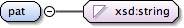

This describes the string that will be passed to a command line program via command line parameters. The command line handler will perform basic variable substitution on sub elements of this.Example:when you use the program, you type: /OME/bin/OME_Image_XYZ_stats Path=[path to repository file] Dims=[X],[Y],[Z],[W],[T],[BytesPerPix]XML specification of the command line parameters is:<CommandLine>Path=<RawImageFilePath/> Dims=<sizeX/>,<sizeY/>,<sizeZ/>,<sizeW/>,<sizeT/>,<BPP/></CommandLine>
<xsd:element name="CommandLine"><!-- top level definition --><xsd:annotation><xsd:documentation>This describes the string that will be passed to a command line program via command line parameters. The command line handler will perform basic variable substitution on sub elements of this. Example: when you use the program, you type: /OME/bin/OME_Image_XYZ_stats Path=[path to repository file] Dims=[X],[Y],[Z],[W],[T],[BytesPerPix] XML specification of the command line parameters is: <CommandLine>Path=<RawImageFilePath/> Dims=<sizeX/>,<sizeY/>,<sizeZ/>,<sizeW/>,<sizeT/>,<BPP/></CommandLine></xsd:documentation></xsd:annotation><xsd:complexType><xsd:sequence><xsd:element ref="CLI:Parameter" minOccurs="0" maxOccurs="unbounded"/></xsd:sequence></xsd:complexType><xsd:unique name="CommandLine_XYPlaneID"><xsd:selector xpath=".//CLI:XYPlane"/><xsd:field xpath="@XYPlaneID"/></xsd:unique><xsd:keyref name="CommandLine_XYPlaneID_Ref" refer="CLI:CommandLine_XYPlaneID"><xsd:selector xpath=".//CLI:Match"/><xsd:field xpath="@XYPlaneID"/></xsd:keyref></xsd:element>
<xsd:element name="Parameter"><!-- top level definition --><xsd:annotation><xsd:documentation>All Formal Inputs referenced within this scope should have a count of 0 or 1.</xsd:documentation></xsd:annotation><xsd:complexType><xsd:sequence><xsd:element ref="CLI:InputSubString" minOccurs="1" maxOccurs="unbounded"/></xsd:sequence></xsd:complexType></xsd:element>
This specifies where to find a piece of data by FormalInputName and SemanticElementName. i.e. To reference Semantic element 'bar' from Formal Input 'foo', Location="foo.bar"
<xsd:element name="Input"><!-- top level definition --><xsd:annotation><xsd:documentation>References a particular column in a FormalInput. Used for variable substitution.</xsd:documentation></xsd:annotation><xsd:complexType><xsd:attributeGroup ref="CLI:InputLocation"/><xsd:attribute name="DivideBy" use="optional" type="xsd:string"/><xsd:attribute name="MultiplyBy" use="optional" type="xsd:string"/></xsd:complexType></xsd:element>
Specifies bits per pixel (BPP) the module is expecting. If the program can deal with either 8 or 16 bit images, leave this out or specify 16. Both of these result in the BPP of the image being used. That is, if the image is 8 bits, the module will get an 8 bits per pixel. If the image is 16 bits, the module will get 16 bits per pixel.Currently, only native image pixels are supported.
Specifies the expected format of the plane.RAW corresponds to OME repository format of pixel dump.TIFF corresponds to TIFF files.Currently only TIFF is supported.
Needed if you need another plane to match indexes. Referenced by the Match element.
Source
<xsd:element name="XYPlane"><!-- top level definition --><xsd:annotation><xsd:documentation>Describes an XY plane. Used with variable substitution. This will be substituted with a dynamically generated plane.</xsd:documentation></xsd:annotation><xsd:complexType><xsd:sequence><xsd:element ref="CLI:theZ" minOccurs="1" maxOccurs="1"/><xsd:element ref="CLI:theT" minOccurs="1" maxOccurs="1"/><xsd:element ref="CLI:theW" minOccurs="1" maxOccurs="1"/></xsd:sequence><xsd:attribute name="BPP" use="optional"><xsd:annotation><xsd:documentation>Specifies bits per pixel (BPP) the module is expecting. If the program can deal with either 8 or 16 bit images, leave this out or specify 16. Both of these result in the BPP of the image being used. That is, if the image is 8 bits, the module will get an 8 bits per pixel. If the image is 16 bits, the module will get 16 bits per pixel. Currently, only native image pixels are supported.</xsd:documentation></xsd:annotation><xsd:simpleType><xsd:restriction base="xsd:integer"><xsd:enumeration value="8"/><xsd:enumeration value="16"/></xsd:restriction></xsd:simpleType></xsd:attribute><xsd:attribute name="Format" use="optional"><xsd:annotation><xsd:documentation>Specifies the expected format of the plane. RAW corresponds to OME repository format of pixel dump. TIFF corresponds to TIFF files. Currently only TIFF is supported.</xsd:documentation></xsd:annotation><xsd:simpleType><xsd:restriction base="xsd:string"><xsd:enumeration value="RAW"/><xsd:enumeration value="TIFF"/></xsd:restriction></xsd:simpleType></xsd:attribute><xsd:attribute name="XYPlaneID" use="optional" type="xsd:string"><xsd:annotation><xsd:documentation>Needed if you need another plane to match indexes. Referenced by the Match element.</xsd:documentation></xsd:annotation></xsd:attribute><xsd:attribute name="Return" use="optional"><xsd:annotation><xsd:documentation>Specifies whether to the program needs the FilePath or the FileContents. Currently, only the FilePath is supported.</xsd:documentation></xsd:annotation><xsd:simpleType><xsd:restriction base="xsd:string"><xsd:enumeration value="FilePath"/><xsd:enumeration value="File"/></xsd:restriction></xsd:simpleType></xsd:attribute><xsd:attribute name="Pixels" use="required" type="xsd:string"><xsd:annotation><xsd:documentation>References a formal input of semantic type 'Pixels'</xsd:documentation></xsd:annotation></xsd:attribute></xsd:complexType></xsd:element>
<xsd:element name="theZ"><!-- top level definition --><xsd:annotation><xsd:documentation>Describes how the Z constraints of the XY plane should be produced or acquired.</xsd:documentation></xsd:annotation><xsd:complexType><xsd:choice minOccurs="1" maxOccurs="1"><xsd:element ref="CLI:AutoIterate" minOccurs="1" maxOccurs="1"/><xsd:element ref="CLI:UseValue" minOccurs="1" maxOccurs="1"/><xsd:element ref="CLI:IterateRange" minOccurs="1" maxOccurs="1"/><xsd:element ref="CLI:Match" minOccurs="1" maxOccurs="1"/></xsd:choice></xsd:complexType></xsd:element>
<xsd:element name="AutoIterate"><!-- top level definition --><xsd:annotation><xsd:documentation>Iterates a dimension over its entire range. Produces outputs.</xsd:documentation></xsd:annotation><xsd:complexType><xsd:sequence><xsd:element ref="CLI:OutputTo" minOccurs="1" maxOccurs="unbounded"/></xsd:sequence></xsd:complexType></xsd:element>
This specifies where to find a piece of data by FormalOutputName and SemanticElementName. i.e. To reference Semantic element 'bar' from Formal Output 'foo', Location="foo.bar"
Source
<xsd:element name="OutputTo"><!-- top level definition --><xsd:annotation><xsd:documentation>Specifies location to write output. One data chunk that the Output element references may be written to one or more places.</xsd:documentation></xsd:annotation><xsd:complexType><xsd:attributeGroup ref="CLI:OutputLocation"/></xsd:complexType></xsd:element>
This specifies where to find a piece of data by FormalInputName and SemanticElementName. i.e. To reference Semantic element 'bar' from Formal Input 'foo', Location="foo.bar"
Source
<xsd:element name="UseValue"><!-- top level definition --><xsd:annotation><xsd:documentation>Use an input value. References an input, does not produce an output.</xsd:documentation></xsd:annotation><xsd:complexType><xsd:attributeGroup ref="CLI:InputLocation"/></xsd:complexType></xsd:element>
<xsd:element name="IterateRange"><!-- top level definition --><xsd:annotation><xsd:documentation>Iterate this dimension over a range of values. Produces outputs.</xsd:documentation></xsd:annotation><xsd:complexType><xsd:sequence><xsd:element ref="CLI:Start" minOccurs="1" maxOccurs="1"/><xsd:element ref="CLI:End" minOccurs="1" maxOccurs="1"/><xsd:element ref="CLI:OutputTo" minOccurs="1" maxOccurs="unbounded"/></xsd:sequence></xsd:complexType></xsd:element>
This specifies where to find a piece of data by FormalInputName and SemanticElementName. i.e. To reference Semantic element 'bar' from Formal Input 'foo', Location="foo.bar"
Source
<xsd:element name="Start"><!-- top level definition --><xsd:annotation><xsd:documentation>Specifies a starting point of iteration. Not currently supported.</xsd:documentation></xsd:annotation><xsd:complexType><xsd:attributeGroup ref="CLI:InputLocation"/></xsd:complexType></xsd:element>
This specifies where to find a piece of data by FormalInputName and SemanticElementName. i.e. To reference Semantic element 'bar' from Formal Input 'foo', Location="foo.bar"
Source
<xsd:element name="End"><!-- top level definition --><xsd:annotation><xsd:documentation>Specifies an end point of iteration. Not currently supported.</xsd:documentation></xsd:annotation><xsd:complexType><xsd:attributeGroup ref="CLI:InputLocation"/></xsd:complexType></xsd:element>
Used to reference the index method used by another XYplane. Effectively syncs the planes on certain dimensions. Use with caution. Unsynced dimensions need to be compatible.
<xsd:element name="Match"><!-- top level definition --><xsd:annotation><xsd:documentation>Used to reference the index method used by another XYplane. Effectively syncs the planes on certain dimensions. Use with caution. Unsynced dimensions need to be compatible.</xsd:documentation></xsd:annotation><xsd:complexType><xsd:attribute name="XYPlaneID" use="required" type="xsd:string"><xsd:annotation><xsd:documentation>References another Plane.</xsd:documentation></xsd:annotation></xsd:attribute></xsd:complexType></xsd:element>
<xsd:element name="theT"><!-- top level definition --><xsd:annotation><xsd:documentation>Describes how the time constraints of the XY plane should be produced or acquired.</xsd:documentation></xsd:annotation><xsd:complexType><xsd:choice minOccurs="1" maxOccurs="1"><xsd:element ref="CLI:AutoIterate" minOccurs="1" maxOccurs="1"/><xsd:element ref="CLI:UseValue" minOccurs="1" maxOccurs="1"/><xsd:element ref="CLI:IterateRange" minOccurs="1" maxOccurs="1"/><xsd:element ref="CLI:Match" minOccurs="1" maxOccurs="1"/></xsd:choice></xsd:complexType></xsd:element>
<xsd:element name="theW"><!-- top level definition --><xsd:annotation><xsd:documentation>Describes how the wavenumber constraints of the XY plane should be produced or acquired.</xsd:documentation></xsd:annotation><xsd:complexType><xsd:choice minOccurs="1" maxOccurs="1"><xsd:element ref="CLI:AutoIterate" minOccurs="1" maxOccurs="1"/><xsd:element ref="CLI:UseValue" minOccurs="1" maxOccurs="1"/><xsd:element ref="CLI:IterateRange" minOccurs="1" maxOccurs="1"/><xsd:element ref="CLI:Match" minOccurs="1" maxOccurs="1"/></xsd:choice></xsd:complexType></xsd:element>
References a formal input of semantic type 'Pixels'
Source
<xsd:element name="RawImageFilePath"><!-- top level definition --><xsd:annotation><xsd:documentation>Used with variable substitution. This will be substituted with the path and file of the raw pixel dump image file. e.g. /OME/repository/1-tinyTest.ori</xsd:documentation></xsd:annotation><xsd:complexType><xsd:attribute name="Pixels" use="required" type="xsd:string"><xsd:annotation><xsd:documentation>References a formal input of semantic type 'Pixels'</xsd:documentation></xsd:annotation></xsd:attribute></xsd:complexType></xsd:element>
This specifies what and how to write to STDIN.Currently this is still in development. I would STRONGLY recommend contacting Josiah <siah@nih.gov> before coding against it.
<xsd:element name="STDIN"><!-- top level definition --><xsd:annotation><xsd:documentation>This specifies what and how to write to STDIN. Currently this is still in development. I would STRONGLY recommend contacting Josiah <siah@nih.gov> before coding against it.</xsd:documentation></xsd:annotation><xsd:complexType><xsd:sequence><xsd:element ref="CLI:InputRecord" minOccurs="1" maxOccurs="unbounded"/></xsd:sequence></xsd:complexType></xsd:element>
This specifies what semantic elements of the attributes should be used to merge them into records. Every formalInput in a record should be included in this.For records with multiple indexes, (Stack Statistics for example has theT and theC), specify two indexes. The records will be sorted based on the index order.This means a stack statistics record that specifies theC as an index before theT will be sorted first on theC, then on theT.
<xsd:element name="Index"><!-- top level definition --><xsd:annotation><xsd:documentation>This specifies what semantic elements of the attributes should be used to merge them into records. Every formalInput in a record should be included in this. For records with multiple indexes, (Stack Statistics for example has theT and theC), specify two indexes. The records will be sorted based on the index order. This means a stack statistics record that specifies theC as an index before theT will be sorted first on theC, then on theT.</xsd:documentation></xsd:annotation><xsd:complexType><xsd:sequence><xsd:element ref="CLI:Input" minOccurs="1" maxOccurs="unbounded"/></xsd:sequence></xsd:complexType></xsd:element>
Use this to construct a Delimited Record. (i.e. tab delimitted, comma delimitted, etc). At some point this will be expanded to include XYPlanes and RawImageFilePath.
This will be used to separate Records. Defaults to a newline (a newline as interpretted by perl).
Source
<xsd:element name="DelimitedRecord"><!-- top level definition --><xsd:annotation><xsd:documentation>Use this to construct a Delimited Record. (i.e. tab delimitted, comma delimitted, etc). At some point this will be expanded to include XYPlanes and RawImageFilePath.</xsd:documentation></xsd:annotation><xsd:complexType><xsd:sequence><xsd:element ref="CLI:Input" minOccurs="1" maxOccurs="unbounded"/></xsd:sequence><xsd:attribute name="FieldDelimiter" use="required" type="xsd:string"><xsd:annotation><xsd:documentation>This string will be used to separate fields in this record.</xsd:documentation></xsd:annotation></xsd:attribute><xsd:attribute name="RecordDelimiter" default="\n" use="optional" type="xsd:string"><xsd:annotation><xsd:documentation>This will be used to separate Records. Defaults to a newline (a newline as interpretted by perl).</xsd:documentation></xsd:annotation></xsd:attribute></xsd:complexType></xsd:element>
<xsd:element name="CustomRecord"><!-- top level definition --><xsd:annotation><xsd:documentation>Used to construct an arbitrarily formatted record. Not currently supported. email Josiah <siah@nih.gov> if you need this implemented.</xsd:documentation></xsd:annotation><xsd:complexType><xsd:sequence><xsd:element ref="CLI:InputSubString" minOccurs="1" maxOccurs="unbounded"/></xsd:sequence></xsd:complexType></xsd:element>
<xsd:element name="STDOUT"><!-- top level definition --><xsd:annotation><xsd:documentation>This specifies what and how to read STDOUT.</xsd:documentation></xsd:annotation><xsd:complexType><xsd:sequence><xsd:element ref="CLI:OutputRecord" minOccurs="1" maxOccurs="unbounded"/></xsd:sequence></xsd:complexType></xsd:element>
RepeatCount specifies how many times to read a record. If it is not specified, reading will continue until it reaches the end of the output stream.If used in conjunction with TerminateAt, reading will stop after RepeatCount or TerminateAt, whichever comes first.
TerminateAt specifies a regular expression. When a match to this is found, reading will stop.If used in conjuction with RepeatCount, reading will stop after RepeatCount or TerminateAt, whichever comes first.
Source
<xsd:element name="OutputRecord"><!-- top level definition --><xsd:annotation><xsd:documentation>Groups a set of outputs into records.</xsd:documentation></xsd:annotation><xsd:complexType><xsd:attribute name="RepeatCount" use="optional" type="xsd:positiveInteger"><xsd:annotation><xsd:documentation>RepeatCount specifies how many times to read a record. If it is not specified, reading will continue until it reaches the end of the output stream. If used in conjunction with TerminateAt, reading will stop after RepeatCount or TerminateAt, whichever comes first.</xsd:documentation></xsd:annotation></xsd:attribute><xsd:attribute name="TerminateAt" use="optional" type="xsd:string"><xsd:annotation><xsd:documentation>TerminateAt specifies a regular expression. When a match to this is found, reading will stop. If used in conjuction with RepeatCount, reading will stop after RepeatCount or TerminateAt, whichever comes first.</xsd:documentation></xsd:annotation></xsd:attribute></xsd:complexType></xsd:element>
Describes how to access information extracted using a regular expression. Examples are 1, 2, 3, ...
Source
<xsd:element name="Output"><!-- top level definition --><xsd:annotation><xsd:documentation>References a particular column of a FormalOutput.</xsd:documentation></xsd:annotation><xsd:complexType><xsd:sequence><xsd:element ref="CLI:OutputTo" minOccurs="1" maxOccurs="unbounded"/></xsd:sequence><xsd:attribute name="AccessBy" use="required" type="xsd:integer"><xsd:annotation><xsd:documentation>Describes how to access information extracted using a regular expression. Examples are 1, 2, 3, ...</xsd:documentation></xsd:annotation></xsd:attribute></xsd:complexType></xsd:element>
Contains a regular expression. Checked for compilation when the module is imported.
Diagram

Type
xsd:string
Properties
content:
simple
Source
<xsd:element name="pat" type="xsd:string"><!-- top level definition --><xsd:annotation><xsd:documentation>Contains a regular expression. Checked for compilation when the module is imported.</xsd:documentation></xsd:annotation></xsd:element>
If specified, the temporary file will be located in the repository. This specifies where to find a repository attribute by FormalInputName and SemanticElementName(s). Following references is valid. e.g. Location="PixelInput.Repository"
Source
<xsd:element name="TempFile"><!-- top level definition --><xsd:annotation><xsd:documentation>Will be substituted with the full path of the file created. The OutputTo feature is not implemented yet.</xsd:documentation></xsd:annotation><xsd:complexType><xsd:sequence><xsd:element ref="CLI:OutputTo" minOccurs="0" maxOccurs="unbounded"/></xsd:sequence><xsd:attribute name="FileID" use="optional" type="xsd:string"><xsd:annotation><xsd:documentation>Should uniquely identify this tempFile. It is used to retrieve the path as a variable.</xsd:documentation></xsd:annotation></xsd:attribute><xsd:attribute name="Repository" use="optional" type="xsd:string"><xsd:annotation><xsd:documentation>If specified, the temporary file will be located in the repository. This specifies where to find a repository attribute by FormalInputName and SemanticElementName(s). Following references is valid. e.g. Location="PixelInput.Repository"</xsd:documentation></xsd:annotation></xsd:attribute></xsd:complexType></xsd:element>
Allows SemanticTypes Pixels and PixelsPlane to be outputs. The subelements specify locations for the population of data. This data population is useful for a Plane projection algorithm that has the same X and Y dimensions as the Pixels it is operating on.Alternately, these fields may be filled by ouput from STDOUT.The FileSHA1 subelement is automatically calculated for the pixel dump file.
Unimplemented. Will subsume all subelements except <Repository> and <Path>. This will reference a formal input. That input be used for copying all possible data that has not been filled by other means.
<xsd:element name="PixelOutput"><!-- top level definition --><xsd:annotation><xsd:documentation>Allows SemanticTypes Pixels and PixelsPlane to be outputs. The subelements specify locations for the population of data. This data population is useful for a Plane projection algorithm that has the same X and Y dimensions as the Pixels it is operating on. Alternately, these fields may be filled by ouput from STDOUT. The FileSHA1 subelement is automatically calculated for the pixel dump file.</xsd:documentation></xsd:annotation><xsd:complexType><xsd:sequence><xsd:element ref="CLI:SizeX" minOccurs="0" maxOccurs="1"/><xsd:element ref="CLI:SizeY" minOccurs="0" maxOccurs="1"/><xsd:element ref="CLI:SizeZ" minOccurs="0" maxOccurs="1"/><xsd:element ref="CLI:SizeC" minOccurs="0" maxOccurs="1"/><xsd:element ref="CLI:SizeT" minOccurs="0" maxOccurs="1"/><xsd:element ref="CLI:PixelType" minOccurs="0" maxOccurs="1"/><xsd:element ref="CLI:BitsPerPixel" minOccurs="0" maxOccurs="1"/><xsd:element ref="CLI:Repository" minOccurs="0" maxOccurs="1"/><xsd:element ref="CLI:Path" minOccurs="0" maxOccurs="1"/></xsd:sequence><xsd:attribute name="type" use="optional"><xsd:simpleType><xsd:restriction base="xsd:string"><xsd:enumeration value="Pixels"/><xsd:enumeration value="PixelsPlane"/></xsd:restriction></xsd:simpleType></xsd:attribute><xsd:attribute name="FormalOutput" use="optional" type="xsd:string"/><xsd:attribute name="UseBase" use="optional" type="xsd:string"><xsd:annotation><xsd:documentation>Unimplemented. Will subsume all subelements except <Repository> and <Path>. This will reference a formal input. That input be used for copying all possible data that has not been filled by other means.</xsd:documentation></xsd:annotation></xsd:attribute></xsd:complexType></xsd:element>
This specifies where to find a piece of data by FormalOutputName and SemanticElementName. i.e. To reference Semantic element 'bar' from Formal Output 'foo', Location="foo.bar"
Source
<xsd:element name="SizeX"><!-- top level definition --><xsd:annotation><xsd:documentation>Specifies an input data location for populating the semantic element</xsd:documentation></xsd:annotation><xsd:complexType><xsd:attribute name="Location" use="required" type="xsd:string"><xsd:annotation><xsd:documentation>This specifies where to find a piece of data by FormalOutputName and SemanticElementName. i.e. To reference Semantic element 'bar' from Formal Output 'foo', Location="foo.bar"</xsd:documentation></xsd:annotation></xsd:attribute></xsd:complexType></xsd:element>
This specifies where to find a piece of data by FormalOutputName and SemanticElementName. i.e. To reference Semantic element 'bar' from Formal Output 'foo', Location="foo.bar"
Source
<xsd:element name="SizeY"><!-- top level definition --><xsd:annotation><xsd:documentation>Specifies an input data location for populating the semantic element</xsd:documentation></xsd:annotation><xsd:complexType><xsd:attribute name="Location" use="required" type="xsd:string"><xsd:annotation><xsd:documentation>This specifies where to find a piece of data by FormalOutputName and SemanticElementName. i.e. To reference Semantic element 'bar' from Formal Output 'foo', Location="foo.bar"</xsd:documentation></xsd:annotation></xsd:attribute></xsd:complexType></xsd:element>
This specifies where to find a piece of data by FormalOutputName and SemanticElementName. i.e. To reference Semantic element 'bar' from Formal Output 'foo', Location="foo.bar"
Source
<xsd:element name="SizeZ"><!-- top level definition --><xsd:annotation><xsd:documentation>Specifies an input data location for populating the semantic element</xsd:documentation></xsd:annotation><xsd:complexType><xsd:attribute name="Location" use="required" type="xsd:string"><xsd:annotation><xsd:documentation>This specifies where to find a piece of data by FormalOutputName and SemanticElementName. i.e. To reference Semantic element 'bar' from Formal Output 'foo', Location="foo.bar"</xsd:documentation></xsd:annotation></xsd:attribute></xsd:complexType></xsd:element>
This specifies where to find a piece of data by FormalOutputName and SemanticElementName. i.e. To reference Semantic element 'bar' from Formal Output 'foo', Location="foo.bar"
Source
<xsd:element name="SizeC"><!-- top level definition --><xsd:annotation><xsd:documentation>Specifies an input data location for populating the semantic element</xsd:documentation></xsd:annotation><xsd:complexType><xsd:attribute name="Location" use="required" type="xsd:string"><xsd:annotation><xsd:documentation>This specifies where to find a piece of data by FormalOutputName and SemanticElementName. i.e. To reference Semantic element 'bar' from Formal Output 'foo', Location="foo.bar"</xsd:documentation></xsd:annotation></xsd:attribute></xsd:complexType></xsd:element>
This specifies where to find a piece of data by FormalOutputName and SemanticElementName. i.e. To reference Semantic element 'bar' from Formal Output 'foo', Location="foo.bar"
Source
<xsd:element name="SizeT"><!-- top level definition --><xsd:annotation><xsd:documentation>Specifies an input data location for populating the semantic element</xsd:documentation></xsd:annotation><xsd:complexType><xsd:attribute name="Location" use="required" type="xsd:string"><xsd:annotation><xsd:documentation>This specifies where to find a piece of data by FormalOutputName and SemanticElementName. i.e. To reference Semantic element 'bar' from Formal Output 'foo', Location="foo.bar"</xsd:documentation></xsd:annotation></xsd:attribute></xsd:complexType></xsd:element>
This specifies where to find a piece of data by FormalOutputName and SemanticElementName. i.e. To reference Semantic element 'bar' from Formal Output 'foo', Location="foo.bar"
Source
<xsd:element name="PixelType"><!-- top level definition --><xsd:annotation><xsd:documentation>Specifies an input data location for populating the semantic element</xsd:documentation></xsd:annotation><xsd:complexType><xsd:attribute name="Location" use="required" type="xsd:string"><xsd:annotation><xsd:documentation>This specifies where to find a piece of data by FormalOutputName and SemanticElementName. i.e. To reference Semantic element 'bar' from Formal Output 'foo', Location="foo.bar"</xsd:documentation></xsd:annotation></xsd:attribute></xsd:complexType></xsd:element>
This specifies where to find a piece of data by FormalOutputName and SemanticElementName. i.e. To reference Semantic element 'bar' from Formal Output 'foo', Location="foo.bar"
Source
<xsd:element name="BitsPerPixel"><!-- top level definition --><xsd:annotation><xsd:documentation>Specifies an input data location for populating the semantic element</xsd:documentation></xsd:annotation><xsd:complexType><xsd:attribute name="Location" use="required" type="xsd:string"><xsd:annotation><xsd:documentation>This specifies where to find a piece of data by FormalOutputName and SemanticElementName. i.e. To reference Semantic element 'bar' from Formal Output 'foo', Location="foo.bar"</xsd:documentation></xsd:annotation></xsd:attribute></xsd:complexType></xsd:element>
This specifies where to find a piece of data by FormalOutputName and SemanticElementName. i.e. To reference Semantic element 'bar' from Formal Output 'foo', Location="foo.bar"
Source
<xsd:element name="Repository"><!-- top level definition --><xsd:annotation><xsd:documentation>Specifies an input data location for populating the semantic element</xsd:documentation></xsd:annotation><xsd:complexType><xsd:attribute name="Location" use="required" type="xsd:string"><xsd:annotation><xsd:documentation>This specifies where to find a piece of data by FormalOutputName and SemanticElementName. i.e. To reference Semantic element 'bar' from Formal Output 'foo', Location="foo.bar"</xsd:documentation></xsd:annotation></xsd:attribute></xsd:complexType></xsd:element>
<xsd:element name="Path"><!-- top level definition --><xsd:annotation><xsd:documentation>Specifies a data location for populating the semantic element</xsd:documentation></xsd:annotation><xsd:complexType><xsd:attribute name="FileID" use="optional" type="xsd:string"><xsd:annotation><xsd:documentation>Refers to a TempFile</xsd:documentation></xsd:annotation></xsd:attribute></xsd:complexType></xsd:element>
This specifies where to find a piece of data by FormalInputName and SemanticElementName. i.e. To reference Semantic element 'bar' from Formal Input 'foo', Location="foo.bar"
This specifies where to find a piece of data by FormalInputName and SemanticElementName. i.e. To reference Semantic element 'bar' from Formal Input 'foo', Location="foo.bar"
<xsd:attribute name="Location" use="required" type="xsd:string"><xsd:annotation><xsd:documentation>This specifies where to find a piece of data by FormalInputName and SemanticElementName. i.e. To reference Semantic element 'bar' from Formal Input 'foo', Location="foo.bar"</xsd:documentation></xsd:annotation></xsd:attribute>
This specifies where to find a piece of data by FormalOutputName and SemanticElementName. i.e. To reference Semantic element 'bar' from Formal Output 'foo', Location="foo.bar"
<xsd:attribute name="Location" use="required" type="xsd:string"><xsd:annotation><xsd:documentation>This specifies where to find a piece of data by FormalOutputName and SemanticElementName. i.e. To reference Semantic element 'bar' from Formal Output 'foo', Location="foo.bar"</xsd:documentation></xsd:annotation></xsd:attribute>
Specifies bits per pixel (BPP) the module is expecting. If the program can deal with either 8 or 16 bit images, leave this out or specify 16. Both of these result in the BPP of the image being used. That is, if the image is 8 bits, the module will get an 8 bits per pixel. If the image is 16 bits, the module will get 16 bits per pixel.Currently, only native image pixels are supported.
<xsd:attribute name="BPP" use="optional"><xsd:annotation><xsd:documentation>Specifies bits per pixel (BPP) the module is expecting. If the program can deal with either 8 or 16 bit images, leave this out or specify 16. Both of these result in the BPP of the image being used. That is, if the image is 8 bits, the module will get an 8 bits per pixel. If the image is 16 bits, the module will get 16 bits per pixel. Currently, only native image pixels are supported.</xsd:documentation></xsd:annotation><xsd:simpleType><xsd:restriction base="xsd:integer"><xsd:enumeration value="8"/><xsd:enumeration value="16"/></xsd:restriction></xsd:simpleType></xsd:attribute>
Specifies the expected format of the plane.RAW corresponds to OME repository format of pixel dump.TIFF corresponds to TIFF files.Currently only TIFF is supported.
<xsd:attribute name="Format" use="optional"><xsd:annotation><xsd:documentation>Specifies the expected format of the plane. RAW corresponds to OME repository format of pixel dump. TIFF corresponds to TIFF files. Currently only TIFF is supported.</xsd:documentation></xsd:annotation><xsd:simpleType><xsd:restriction base="xsd:string"><xsd:enumeration value="RAW"/><xsd:enumeration value="TIFF"/></xsd:restriction></xsd:simpleType></xsd:attribute>
<xsd:attribute name="XYPlaneID" use="optional" type="xsd:string"><xsd:annotation><xsd:documentation>Needed if you need another plane to match indexes. Referenced by the Match element.</xsd:documentation></xsd:annotation></xsd:attribute>
<xsd:attribute name="Return" use="optional"><xsd:annotation><xsd:documentation>Specifies whether to the program needs the FilePath or the FileContents. Currently, only the FilePath is supported.</xsd:documentation></xsd:annotation><xsd:simpleType><xsd:restriction base="xsd:string"><xsd:enumeration value="FilePath"/><xsd:enumeration value="File"/></xsd:restriction></xsd:simpleType></xsd:attribute>
<xsd:attribute name="Pixels" use="required" type="xsd:string"><xsd:annotation><xsd:documentation>References a formal input of semantic type 'Pixels'</xsd:documentation></xsd:annotation></xsd:attribute>
<xsd:attribute name="Pixels" use="required" type="xsd:string"><xsd:annotation><xsd:documentation>References a formal input of semantic type 'Pixels'</xsd:documentation></xsd:annotation></xsd:attribute>
<xsd:attribute name="FieldDelimiter" use="required" type="xsd:string"><xsd:annotation><xsd:documentation>This string will be used to separate fields in this record.</xsd:documentation></xsd:annotation></xsd:attribute>
<xsd:attribute name="RecordDelimiter" default="\n" use="optional" type="xsd:string"><xsd:annotation><xsd:documentation>This will be used to separate Records. Defaults to a newline (a newline as interpretted by perl).</xsd:documentation></xsd:annotation></xsd:attribute>
RepeatCount specifies how many times to read a record. If it is not specified, reading will continue until it reaches the end of the output stream.If used in conjunction with TerminateAt, reading will stop after RepeatCount or TerminateAt, whichever comes first.
<xsd:attribute name="RepeatCount" use="optional" type="xsd:positiveInteger"><xsd:annotation><xsd:documentation>RepeatCount specifies how many times to read a record. If it is not specified, reading will continue until it reaches the end of the output stream. If used in conjunction with TerminateAt, reading will stop after RepeatCount or TerminateAt, whichever comes first.</xsd:documentation></xsd:annotation></xsd:attribute>
TerminateAt specifies a regular expression. When a match to this is found, reading will stop.If used in conjuction with RepeatCount, reading will stop after RepeatCount or TerminateAt, whichever comes first.
<xsd:attribute name="TerminateAt" use="optional" type="xsd:string"><xsd:annotation><xsd:documentation>TerminateAt specifies a regular expression. When a match to this is found, reading will stop. If used in conjuction with RepeatCount, reading will stop after RepeatCount or TerminateAt, whichever comes first.</xsd:documentation></xsd:annotation></xsd:attribute>
<xsd:attribute name="ExecutionPoint" use="required"><xsd:annotation><xsd:documentation>Assigns a execution point for the analysis.</xsd:documentation></xsd:annotation><xsd:simpleType><xsd:restriction base="xsd:string"><xsd:enumeration value="executeGlobal"/><xsd:enumeration value="startDataset"/><xsd:enumeration value="startImage"/><xsd:enumeration value="startRegion"/><xsd:enumeration value="finishRegion"/><xsd:enumeration value="finishImage"/><xsd:enumeration value="finishDataset"/></xsd:restriction></xsd:simpleType></xsd:attribute>
<xsd:attribute name="AccessBy" use="required" type="xsd:integer"><xsd:annotation><xsd:documentation>Describes how to access information extracted using a regular expression. Examples are 1, 2, 3, ...</xsd:documentation></xsd:annotation></xsd:attribute>
<xsd:attribute name="FileID" use="optional" type="xsd:string"><xsd:annotation><xsd:documentation>Should uniquely identify this tempFile. It is used to retrieve the path as a variable.</xsd:documentation></xsd:annotation></xsd:attribute>
If specified, the temporary file will be located in the repository. This specifies where to find a repository attribute by FormalInputName and SemanticElementName(s). Following references is valid. e.g. Location="PixelInput.Repository"
<xsd:attribute name="Repository" use="optional" type="xsd:string"><xsd:annotation><xsd:documentation>If specified, the temporary file will be located in the repository. This specifies where to find a repository attribute by FormalInputName and SemanticElementName(s). Following references is valid. e.g. Location="PixelInput.Repository"</xsd:documentation></xsd:annotation></xsd:attribute>
This specifies where to find a piece of data by FormalOutputName and SemanticElementName. i.e. To reference Semantic element 'bar' from Formal Output 'foo', Location="foo.bar"
<xsd:attribute name="Location" use="required" type="xsd:string"><xsd:annotation><xsd:documentation>This specifies where to find a piece of data by FormalOutputName and SemanticElementName. i.e. To reference Semantic element 'bar' from Formal Output 'foo', Location="foo.bar"</xsd:documentation></xsd:annotation></xsd:attribute>
This specifies where to find a piece of data by FormalOutputName and SemanticElementName. i.e. To reference Semantic element 'bar' from Formal Output 'foo', Location="foo.bar"
<xsd:attribute name="Location" use="required" type="xsd:string"><xsd:annotation><xsd:documentation>This specifies where to find a piece of data by FormalOutputName and SemanticElementName. i.e. To reference Semantic element 'bar' from Formal Output 'foo', Location="foo.bar"</xsd:documentation></xsd:annotation></xsd:attribute>
This specifies where to find a piece of data by FormalOutputName and SemanticElementName. i.e. To reference Semantic element 'bar' from Formal Output 'foo', Location="foo.bar"
<xsd:attribute name="Location" use="required" type="xsd:string"><xsd:annotation><xsd:documentation>This specifies where to find a piece of data by FormalOutputName and SemanticElementName. i.e. To reference Semantic element 'bar' from Formal Output 'foo', Location="foo.bar"</xsd:documentation></xsd:annotation></xsd:attribute>
This specifies where to find a piece of data by FormalOutputName and SemanticElementName. i.e. To reference Semantic element 'bar' from Formal Output 'foo', Location="foo.bar"
<xsd:attribute name="Location" use="required" type="xsd:string"><xsd:annotation><xsd:documentation>This specifies where to find a piece of data by FormalOutputName and SemanticElementName. i.e. To reference Semantic element 'bar' from Formal Output 'foo', Location="foo.bar"</xsd:documentation></xsd:annotation></xsd:attribute>
This specifies where to find a piece of data by FormalOutputName and SemanticElementName. i.e. To reference Semantic element 'bar' from Formal Output 'foo', Location="foo.bar"
<xsd:attribute name="Location" use="required" type="xsd:string"><xsd:annotation><xsd:documentation>This specifies where to find a piece of data by FormalOutputName and SemanticElementName. i.e. To reference Semantic element 'bar' from Formal Output 'foo', Location="foo.bar"</xsd:documentation></xsd:annotation></xsd:attribute>
This specifies where to find a piece of data by FormalOutputName and SemanticElementName. i.e. To reference Semantic element 'bar' from Formal Output 'foo', Location="foo.bar"
<xsd:attribute name="Location" use="required" type="xsd:string"><xsd:annotation><xsd:documentation>This specifies where to find a piece of data by FormalOutputName and SemanticElementName. i.e. To reference Semantic element 'bar' from Formal Output 'foo', Location="foo.bar"</xsd:documentation></xsd:annotation></xsd:attribute>
This specifies where to find a piece of data by FormalOutputName and SemanticElementName. i.e. To reference Semantic element 'bar' from Formal Output 'foo', Location="foo.bar"
<xsd:attribute name="Location" use="required" type="xsd:string"><xsd:annotation><xsd:documentation>This specifies where to find a piece of data by FormalOutputName and SemanticElementName. i.e. To reference Semantic element 'bar' from Formal Output 'foo', Location="foo.bar"</xsd:documentation></xsd:annotation></xsd:attribute>
This specifies where to find a piece of data by FormalOutputName and SemanticElementName. i.e. To reference Semantic element 'bar' from Formal Output 'foo', Location="foo.bar"
<xsd:attribute name="Location" use="required" type="xsd:string"><xsd:annotation><xsd:documentation>This specifies where to find a piece of data by FormalOutputName and SemanticElementName. i.e. To reference Semantic element 'bar' from Formal Output 'foo', Location="foo.bar"</xsd:documentation></xsd:annotation></xsd:attribute>
<xsd:attribute name="FileID" use="optional" type="xsd:string"><xsd:annotation><xsd:documentation>Refers to a TempFile</xsd:documentation></xsd:annotation></xsd:attribute>
Unimplemented. Will subsume all subelements except <Repository> and <Path>. This will reference a formal input. That input be used for copying all possible data that has not been filled by other means.
<xsd:attribute name="UseBase" use="optional" type="xsd:string"><xsd:annotation><xsd:documentation>Unimplemented. Will subsume all subelements except <Repository> and <Path>. This will reference a formal input. That input be used for copying all possible data that has not been filled by other means.</xsd:documentation></xsd:annotation></xsd:attribute>
This specifies where to find a piece of data by FormalInputName and SemanticElementName. i.e. To reference Semantic element 'bar' from Formal Input 'foo', Location="foo.bar"
Source
<xsd:attributeGroup name="InputLocation"><xsd:attribute name="Location" use="required" type="xsd:string"><xsd:annotation><xsd:documentation>This specifies where to find a piece of data by FormalInputName and SemanticElementName. i.e. To reference Semantic element 'bar' from Formal Input 'foo', Location="foo.bar"</xsd:documentation></xsd:annotation></xsd:attribute></xsd:attributeGroup>
This specifies where to find a piece of data by FormalOutputName and SemanticElementName. i.e. To reference Semantic element 'bar' from Formal Output 'foo', Location="foo.bar"
Source
<xsd:attributeGroup name="OutputLocation"><xsd:attribute name="Location" use="required" type="xsd:string"><xsd:annotation><xsd:documentation>This specifies where to find a piece of data by FormalOutputName and SemanticElementName. i.e. To reference Semantic element 'bar' from Formal Output 'foo', Location="foo.bar"</xsd:documentation></xsd:annotation></xsd:attribute></xsd:attributeGroup>